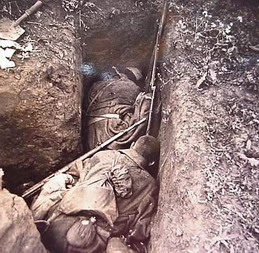
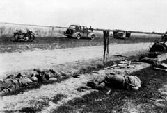
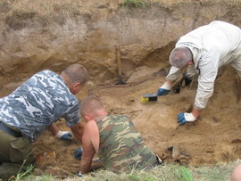

|
В своем недавнем выступлении на «Эхо Москвы» начальник Управления Министерства обороны РФ по увековечиванию памяти погибших при защите Отечества генерал-майор запаса А. В. Кириллин сделал, мягко говоря, странное заявление. Отвечая на вопросы ведущих, он объявил, что "незахороненных солдат практически нет".
Эти слова высокого чина от МО вызвали резко негативную реакцию поисковиков России. Они законно спрашивают у генерала: «Кого же мы тогда поднимаем тысячами каждый год уже более 20 лет? Могилы грабим? Из пальца высасываем? На бумаге рисуем? В моргах и на старых кладбищах промышляем? Лепим из папье-маше? Бланки медальонов в фотошопе варганим, а капсулы и гильзы-смертники в подпольных мастерских тачаем? Именные данные бойцов в бланки медальонов вставляем из ЦАМО РФ или из ОБД "Мемориал", а розыск родственников придумываем для изящной отчётности? Все 22 года официального поиска "потёмкинские деревни" строим на костях?».
Для справки: в 2009 г. бойцами поисковых отрядов Тверской области и других регионов России только на территории Зубцовского района было эксгумировано и перезахоронено более 1200 останков советских солдат и офицеров.
23 апреля Тверские поисковики открыли свою очередную «Вахту Памяти». Пожелаем этим мужественным и самоотверженным патриотам России успехов в их благородном деле. А чтобы было понятно, ради чего они пойдут в леса, на поля и в болота публикуем этот рассказ.
Фонд носит имя Георгия Васильевича. Какие замыслы Г.В. Харитонова оказались жизнеспособными, какие идеи осуществляются?
НАШЛИ МЕНЯ В ВОРОНКЕ
Блаженны павшие за Родину
ибо их есть Царствие Небесное... 
Большой такой воронке - полутонка хорошие дыры в земле роет. Меня туда после боя скинули, чтобы лежал и воздух своим существованием больше не портил.
Лето сменилось зимой, зима летом, и так 65 подряд лет.
Скучно мне не было, тут много наших, да и гансов по ту сторону дороги тоже хватает. В гости мы, конечно, не ходили друг к другу. Но и стрелять уже не стреляли. Смысла нет. Но и война для нас не закончилась. Все ждем приказа, а он никак не приходит...
А нашли меня осенью. Листва еще была зеленая, но уже готовилась к тому, чтобы укрыть нас очередным одеялом. Хотя мертвые не только сраму не имут, но и холода не боятся. Чего нам бояться то? Только одного...
Нашли меня случайно, молодой парнишка, чуть старше меня, лет двадцати, наверно. Сел на краю воронки, закурил незнакомым ароматным табаком, и с ленцой ткнул длинным щупом в дно. И надо ж, прямо в ногу мне попал.
Он прислушался к стуку металла о кость, ткнул еще несколько раз, и, отплюнув в сторону недокуренную папиросу с желтым мундштуком, спрыгнул вниз. Расточительные у нас потомки. Мы самокрутку на четверых порой делили.
В несколько взмахов саперной лопатки, он снял верхний слой почвы надо мной.
"Есть!" - воскликнул он, когда его лопатка отвратительным звуком ширкнула мне по черепу.
Больно мне не было. Было радостно и удивительно - неужели?
 Пацан отложил инструмент в сторону и достал немецкий штык-нож. Интересно, где он его взял? На той стороне подобрал? Не похоже, вроде... Блестит, как новенький. Не то, что мой, от трехлинейки. Тот после последней моей атаки так и заржавел нечищеный.
По косточке он начал поднимать меня, а я пытался подсказать ему, где, что лежит. Конечно, мне все равно - подумаешь, зуб тут останется, или там палец, но как-то не хотелось часть себя оставлять.
Ну не хотелось...
Жалко медальон осколком разбило. Хоть бы весточку моим передали, где я да что я. Впрочем, вряд ли бы она дошла. Брату, сейчас наверно уже лет 70... Где он сейчас? Жив ли? Или ждет меня уже там? Ну а Ленка точно не дождалась. И правильно сделала.
Эй, эй! Парень! Куда глину кидаешь? Это ж сердце мое, пусть и бывшее! Не услышал.
Хотя сердце тогда в лохмотья разорвало.
 Когда мы бежали по полю, к дороге, земля в крови, кровь на сапогах, тогда и шмальнуло. Я сразу и не понял, пробежал еще метров сто, траншея с фрицами приближалась, хочу прыгнуть уже, смотрю, а винтовки нет, и граната из руки будто выпала...
Оглянулся, а тело мое лежит, голова вдрызг, грудь разворочена и только ноги в ботинках еще дергаются.
Сейчас даже смешно. А тогда страшно было. И чего делать - не знаю. Упал, пополз обратно, пытаюсь винтовку схватить, а не могу. И мычу, мычу...
Мне б дураку "Отче наш" вспомнить... А как его вспомнить, если я его и не знал никогда. Комсомольцам религиозный опиум ни к чему. Это мне еще отец объяснил, когда колокола с церкви сбрасывали и крест роняли.
Ну, а наши немцев из траншеи тогда все-таки выбили. Покрошили не мало, но и нас полегло - почти весь батальон.
Потом половину оставшихся собрали, и они ушли над лесом на восход.
Как были - с пробитыми касками, в бинтах оторванными ногами они шагали над землей. Красиво шли. Молча. Не оглядываясь.
А мы остались.
А парень нашел осколки медальона и матюгнулся так, что с рябинки над ним листочки посыпались. От расстройства снова закурил, разглядывая находку.
И тут подошел второй. Первый молча протянул ему остатки медальона.
Второй только вздохнул: "Эх, блин, еще один неопознанный"
Первый молча кивнул, докурил и снова спустился ко мне.
Да ладно вам, ребята, хотелось мне сказать, не переживайте. Я без вести пропавший, обычный солдат. Таких, как я, много. Только подо мной в воронке еще 10 наших. Из нашего взвода. И все рядовые, которых никогда не опознают. У кого потерялся медальон, у кого записка сгнила, а кто и просто не заполнил бумажку. Мол, если заполнишь - убьет. А войне похрену на суеверия. Она убивает, не взирая на документы, ордена, звания и возраст.
Вон рядом совсем, сестричку с нашим лейтенантом накрыло одной миной. Она его раненного уже вытаскивала с нейтралки. У комвзвода, кстати, медальон есть. Я точно знаю.
Мужики! Найдите их! Вместе мы тут воевали, потом лежали вместе. Хотелось бы и после не расставаться.
Так думал я, когда наше отделение пацаны в грязных камуфляжах тащили в мешках к машине.
Так думал я, когда нас привезли на кладбище, в простых сосновых гробах - по одному на троих.
Так думал я, когда нас тут встретили ребята с братских могил. В строю, как полагается.
Так думаю я и сейчас, уже после того, как они проводили нас над лесом на восток.
И оглядываясь назад, я прошу - мужики! Найдите тех, кто еще остался!
(по материалам www.soldat.ru) |